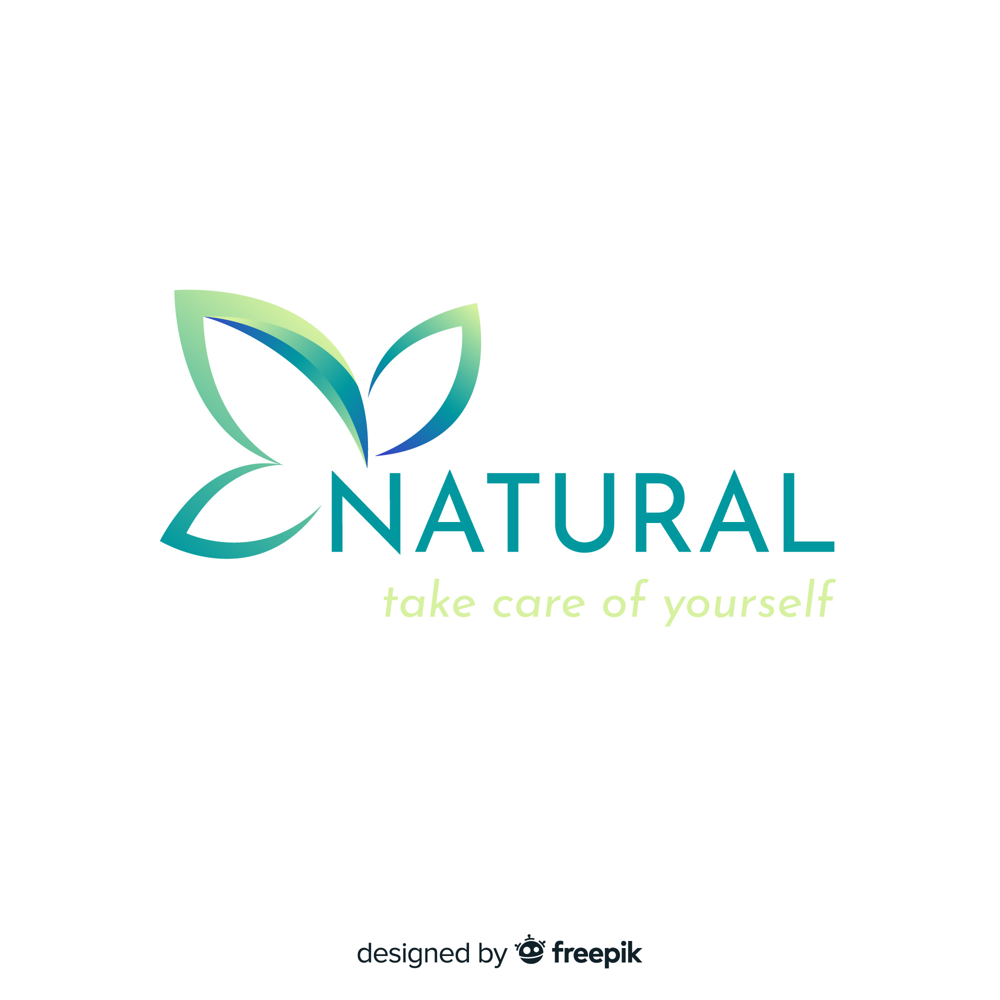

Home
About Us
Servises
Contact
WelCome To Our Natural Hospital
ABOUT US
🧠 Thought Process Shift (Natural Thinking):
How our mindset shifts when we start choosing natural things consciously:
Instead of popping pills immediately, we first try home remedies or adjust our diet.
We start listening to our body more (like "Why am I feeling bloated?" instead of just ignoring it).
Living by the idea of “less is more” – keeping it clean, simple, and natural.
🌿 Natural Remedies & Healing:
Old-school or traditional natural fixes like:
Turmeric milk for immunity
Giloy, tulsi, ashwagandha for cold/flu
Neem paste for skin issues
Garlic oil for pain, castor oil for swelling
If you want, we can deep-dive into a specific issue and explore natural ways to treat it.
🏥 Natural-Type Hospital Concept:
Imagine a hospital or healing center that:
Uses mostly plant-based, chemical-free treatments
Mixes yoga, meditation, and food as part of the recovery
Is built with eco-friendly materials, has garden areas, and natural light everywhere
Has doctors trained in both modern science and ancient systems like Ayurveda